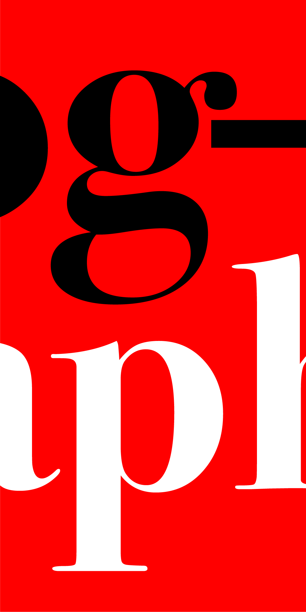
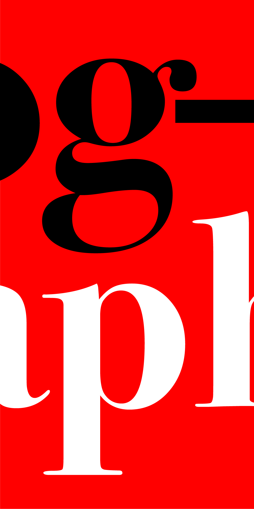

Type is a complex form of design that often verges on art. Everyone uses type, but much like other forms of design, it depends on context for the proper utilization for a niche audience. Of course there are sorts of type that are multitaskers- typefaces that can be used for a variety of situations. Powerhouses like Helvetica, Arial, and Open Sans have common core principles that they share with one another, a high x-height, a san-serif sensibility, and possibly, the most obvious, they are all default fonts.
While this might be due to chance, I doubt that it would be that simple, especially from a user experience perspective. The accessibility of these fonts makes for more of a sense of purpose and perplexity within the need of the font itself. In regards to the need of a singular font, I default to the concept of Marshall McLuhan’s ubiquitous quote- the the medium is the message, that rather than what you say, it’s how you say it.
For a more grotesque example, imagine writing hi to a friend, but the paint you’ve chosen is not the likes of gauche or acrylic, but blood. Though your message may be a mere greeting, its meaning translates into something far more nefarious due to the bodily fluids you’ve chosen to write your message in. While this instance may seem extreme, your colleagues (especially your design ones!) may display similar reaction if you were to use papyrus for a company email.
This is not to say that certain fonts are inherently bad, but rather to touch on the fact that messages require quite a bit of context to thrive in the environment they’re meant intended to be involved in. Of course, display fonts aren’t really included in this narrative, as it would be particularly unwise to use something like Bebas Neue for the likes of body copy, as its tall and thin severity would translate into a harsher message than initially meant.